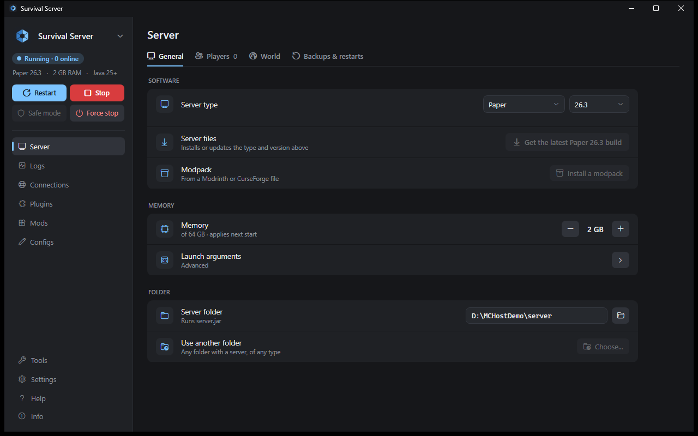
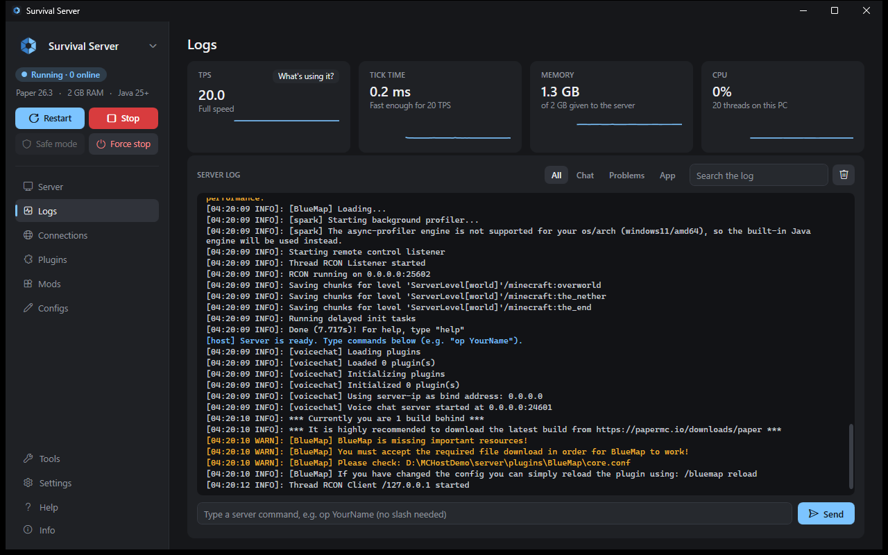
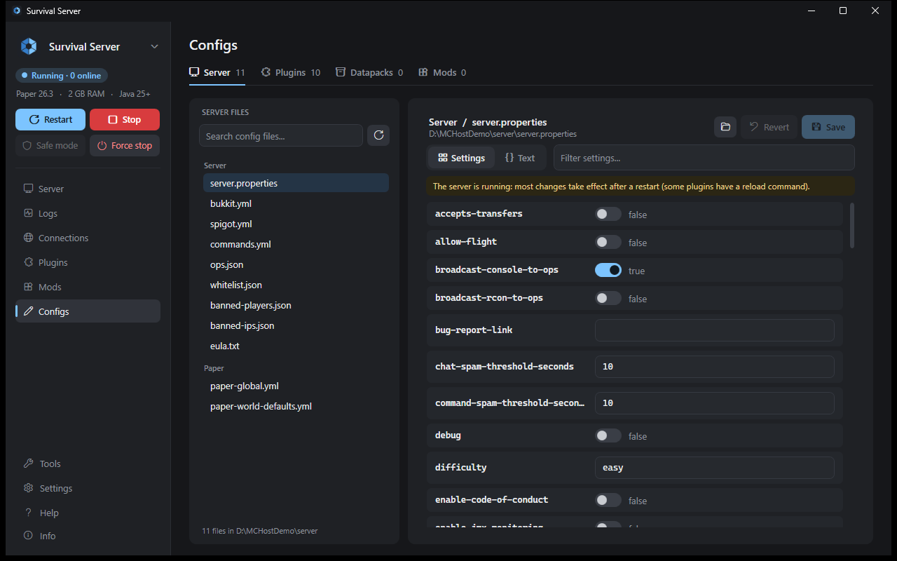
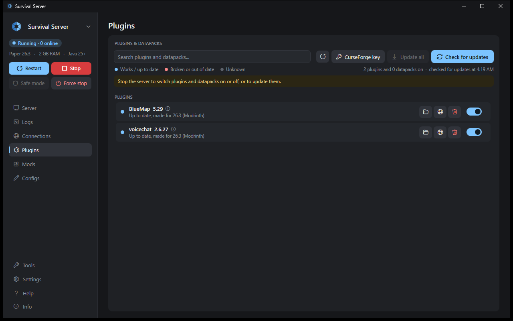
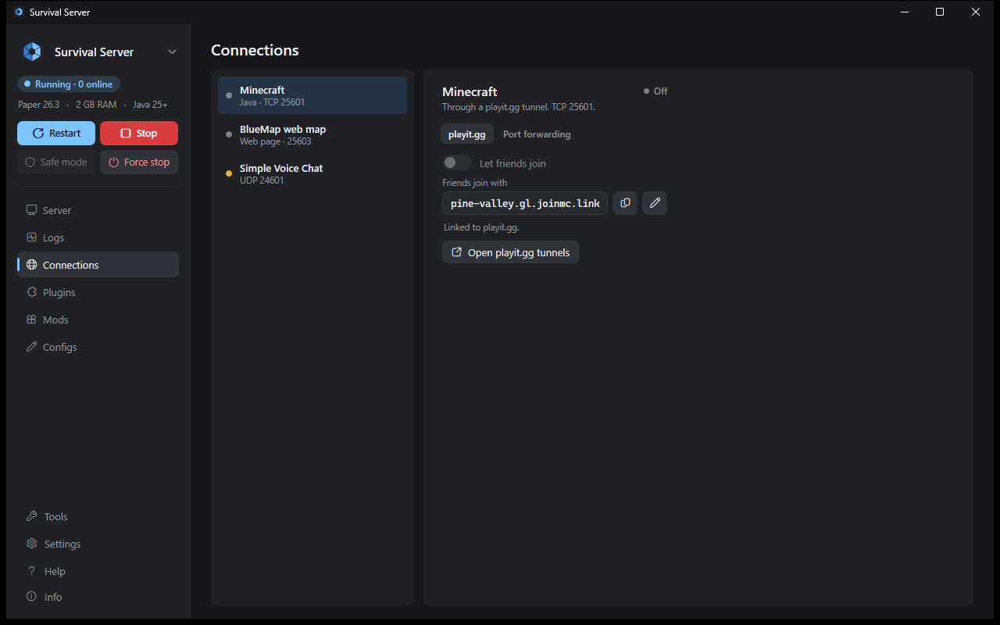
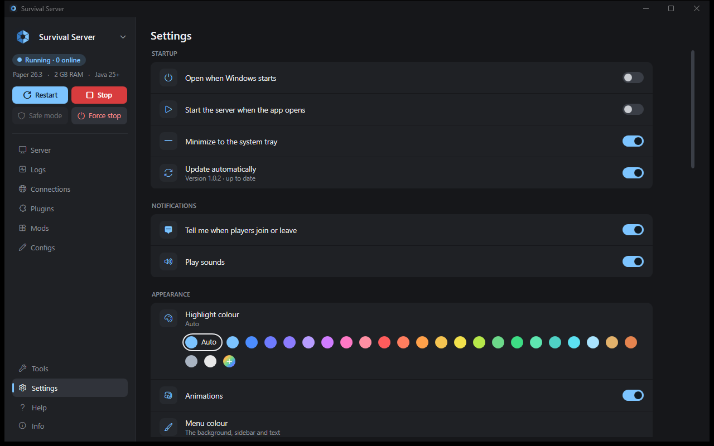
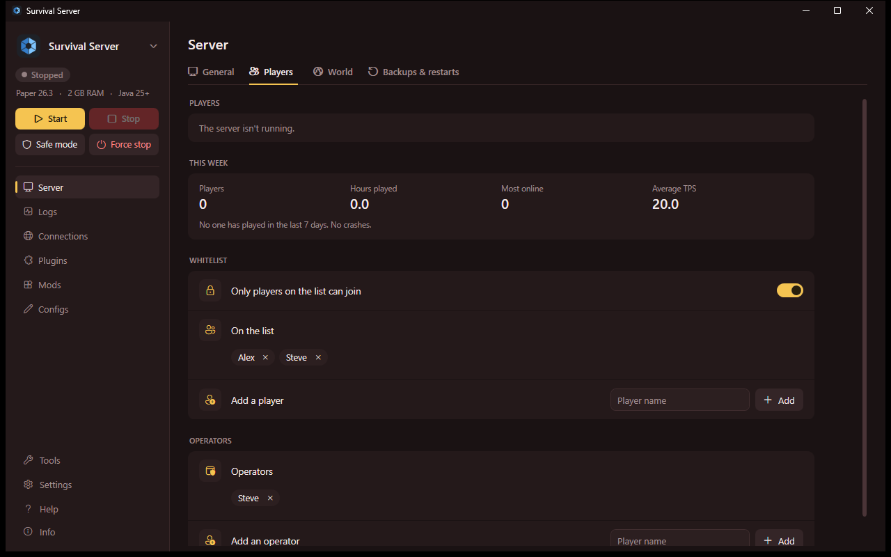

Your own Minecraft server,
one app away.
Run a Minecraft Java server on your PC and let friends join from anywhere, with or without port forwarding. Plugins, mods, modpacks, backups and more, without touching a command line.

Everything a small server needs
Set it up once, then just press Start.
Any server type
Paper, Fabric, Quilt, Forge, NeoForge or Vanilla, any version. Switching backs up your worlds first.
Modpacks in one step
Drop in a Modrinth or CurseForge pack. The exact loader, mods and configs are installed, and client-only mods are switched off.
Plugins and mods
See which ones work on your version, update them from Modrinth or CurseForge, and drag new ones onto the window.
Readable configs
Every setting in a grid with its description. Comments and formatting are kept, and every save is backed up.
Backups and restarts
Automatic world backups, scheduled restarts with in-game warnings, and recovery after a crash.
Performance at a glance
TPS, tick time, memory and CPU with live graphs, and a console with filters and search.
Maps and voice chat
BlueMap, Dynmap, Simple Voice Chat, Geyser and others are found automatically, with what each one needs.
Move it anywhere
Pack a whole server into one file and bring it back on another PC, worlds and settings included.
Make it yours
75 menu colours, and 24 highlight colours or any colour you pick. Updates itself, if you want it to.
Two ways for friends to join
Pick whichever fits your network. You can change it any time.
No router setup
A free playit.gg tunnel carries your friends' connection to your PC. Nothing to change on your router.
Port forwarding
Already forward ports? Friends connect straight to your public address. No third-party service at all.
A look inside
A sidebar for the server, a page for each job.






Getting started
About five minutes, most of it downloading.
- Download the app and put it in its own folder.
- Run it and click Set up this PC. Java and anything else needed is downloaded from the official sources and checked.
- Pick a server type and version and click Install, or open a server folder you already have.
- Press Start and send your friends the address from the Connections page.